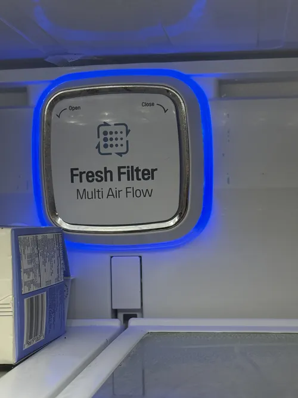

LG Refrigerator Repair: When a Compressor Replacement Makes Sense
The compressor is often considered the heart of a refrigerator’s cooling system. It is responsible for circulating refrigerant throughout the appliance and maintaining the temperatures necessary for safe food storage. Because the compressor plays such an important role, homeowners are often concerned when they hear that a compressor related problem may exist. One of the most common questions asked during professional LG refrigerator repair is whether a compressor replacement is truly necessary or if another repair solution may be available.
Modern LG refrigerators use advanced inverter and linear compressor technology designed to improve cooling efficiency, reduce energy consumption, and maintain stable temperatures. While these systems are highly sophisticated, they remain part of a larger refrigeration system that includes sensors, evaporator fans, control boards, refrigerant lines, and multiple electronic components. As a result, symptoms that appear to indicate compressor failure do not always mean the compressor itself is defective.
One of the most important reasons professional diagnostics are necessary is that many refrigerator problems can mimic compressor failure. Poor cooling performance, warm temperatures, unusual noises, excessive frost buildup, and long operating cycles may all be caused by airflow restrictions, evaporator fan problems, sensor failures, electronic control issues, or refrigerant system abnormalities. Accurate LG refrigerator repair begins with identifying the true source of the problem before major components are replaced.

A refrigerator that stops cooling completely is often the first situation that causes homeowners to suspect compressor failure. However, complete cooling loss can result from several different conditions. Professional technicians use specialized testing equipment to evaluate compressor operation, electrical performance, refrigerant pressures, and system communication before recommending replacement. This diagnostic process helps prevent unnecessary repairs and ensures that the actual problem is identified correctly.
Another common sign associated with compressor issues is excessive runtime. A refrigerator that appears to run continuously without reaching the desired temperature may be struggling with cooling efficiency. While compressor wear can contribute to this symptom, other factors such as dirty condenser coils, airflow restrictions, damaged door gaskets, or electronic control problems may also be responsible. Proper testing is essential before concluding that compressor replacement is necessary.
Unusual noises can sometimes indicate compressor related concerns. Clicking sounds, buzzing noises, loud humming, or repeated startup attempts may suggest that the cooling system is experiencing difficulty. However, similar noises can also originate from relays, fan motors, control boards, or other refrigerator components. Professional LG refrigerator repair focuses on isolating the source of the noise before major repairs are recommended.
In some situations, compressor replacement makes sense because the compressor has experienced a confirmed mechanical or electrical failure.
When diagnostic testing clearly shows that the compressor can no longer operate properly, replacement may restore reliable cooling performance and extend the useful life of the refrigerator. The decision often depends on the age of the appliance, the overall condition of the refrigerator, and the expected long term value of the repair.Many homeowners automatically assume that compressor replacement means the refrigerator should be replaced entirely. In reality, that is not always the case. A refrigerator that is otherwise in good condition may continue providing years of reliable service after a properly completed compressor repair. This is why accurate diagnostics and professional recommendations are so important when evaluating repair options.
The condition of other cooling system components should also be considered. Refrigerant lines, evaporator coils, condensers, sensors, and electronic controls all influence overall refrigerator performance. Professional LG refrigerator repair technicians evaluate the complete cooling system to ensure that compressor replacement, if recommended, is truly the most appropriate solution.
Preventive maintenance can help reduce stress on compressor systems and support long term reliability. Cleaning condenser coils, maintaining proper airflow, replacing worn door gaskets, and addressing cooling problems early can all help improve refrigerator efficiency and reduce unnecessary workload on the compressor. While maintenance cannot prevent every failure, it often contributes to longer appliance life and improved performance.
One of the biggest mistakes homeowners make is delaying service after cooling problems begin. A refrigerator that continues operating with reduced efficiency may place additional strain on the cooling system and potentially increase repair complexity. Early diagnosis often provides more repair options and improves the chances of restoring normal operation before larger failures occur.
Professional LG refrigerator repair is ultimately about making informed decisions based on accurate information. Compressor replacement should only be recommended after thorough diagnostics confirm that the compressor is truly responsible for the problem. Whether your refrigerator is experiencing cooling loss, unusual noises, temperature instability, or extended runtime, proper evaluation helps determine the most effective and cost efficient path forward. Understanding when compressor replacement makes sense allows homeowners to protect their investment while maintaining reliable refrigerator performance for years to come.